Grade 4 — Fractions and multi-digit work
Place value, algorithms, geometry. This guide contains 52 chapter-level worked lessons, review questions, answers, and linked illustrations.
Contents — select a chapter
Multi-digit multiplication
Use the distributive property or a standard algorithm.
24 × 13 = 312.
- 24 × 10 = 240
- 24 × 3 = 72
- Add = 312.
36 * 14
Hint: Break fourteen into ten and four.
Show answer and verify
504
Check the units, inputs and intermediate steps. Different solution methods may be valid.
Long division
Divide, multiply, subtract, bring down, and check.
156 ÷ 12 = 13.
- 12 × 10 = 120
- Remaining 36 = 12 × 3
- Answer 13.
144 / 12
Hint: Check with multiplication.
Show answer and verify
12
Check the units, inputs and intermediate steps. Different solution methods may be valid.
Factors and multiples
A factor divides evenly; a multiple is a product of a whole number.
Factors of 12: 1,2,3,4,6,12.
- Test divisibility in pairs
- 3 × 4 = 12.
What is the greatest common factor of 18 and 24?
Hint: List common factors.
Show answer and verify
6
Check the units, inputs and intermediate steps. Different solution methods may be valid.
Fraction addition
Fractions with equal denominators add numerators only.
2/7 + 3/7 = 5/7.
- Denominator stays seven
- Add 2 + 3 = 5.
3/8 + 1/8
Hint: Add numerators: four eighths.
Show answer and verify
0.5
Check the units, inputs and intermediate steps. Different solution methods may be valid.
Mixed numbers
Mixed numbers combine a whole number and a fraction.
2 and 1/3 = 7/3.
- 2 wholes = 6 thirds
- Add one third
- Seven thirds.
What is 1 and 1/2 as a decimal?
Hint: Add one plus half.
Show answer and verify
1.5
Check the units, inputs and intermediate steps. Different solution methods may be valid.
Decimal tenths and hundredths
Decimal digits represent tenths, hundredths, and smaller powers of ten.
0.35 = 3 tenths + 5 hundredths.
- 3/10 + 5/100 = 35/100
- Decimal is 0.35.
0.7 + 0.25
Hint: Align decimal places.
Show answer and verify
0.95
Check the units, inputs and intermediate steps. Different solution methods may be valid.
Angles and degrees
An acute angle is less than 90°, right is 90°, obtuse between 90° and 180°.
Complementary angles sum to 90°.
- Subtract the known angle from 90°
- The remainder complements it.
Find the complement of 35 degrees.
Hint: 90 minus 35.
Show answer and verify
55
Check the units, inputs and intermediate steps. Different solution methods may be valid.
Lines of symmetry
A reflection line divides a figure into matching mirrored halves.
A rectangle has two reflection symmetries if it is not a square.
- Fold through center horizontally
- Fold vertically
- Diagonals donundefinedt generally work.
How many reflection symmetries does a square have?
Hint: Two medians and two diagonals.
Show answer and verify
4
Check the units, inputs and intermediate steps. Different solution methods may be valid.
Measurement conversion
Convert within the same measurement system using a known factor.
3 meters = 300 centimeters.
- 1 m = 100 cm
- Multiply 3 × 100.
How many centimeters in 2.5 meters?
Hint: Multiply by 100.
Show answer and verify
250
Check the units, inputs and intermediate steps. Different solution methods may be valid.
Interpret remainders
Decide whether to round up or leave a remainder in a story.
23 students in vans of 5 need 5 vans.
- Four vans carry 20
- Three remain
- One extra van is required.
21 students, 4 per van. How many vans needed?
Hint: Round up if any students are left.
Show answer and verify
6
Check the units, inputs and intermediate steps. Different solution methods may be valid.
Multi-digit place value to millions
Multi-digit place value to millions: Group digits according to powers of ten; moving one place left multiplies value by 10. An expanded number is the sum of its place-value contributions.
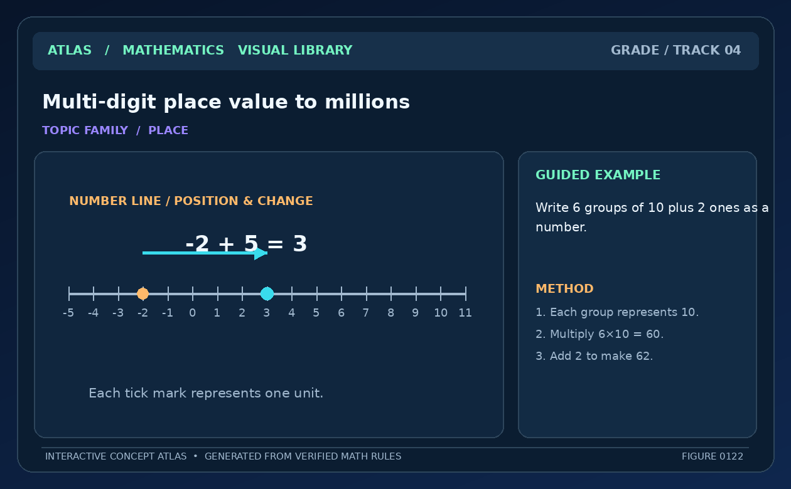
Write 6 groups of 10 plus 2 ones as a number.
- Each group represents 10.
- Multiply 6×10 = 60.
- Add 2 to make 62.
Calculate 2×10 + 6.
Hint: Expand the place value before adding.
Show answer and verify
26
Check the units, inputs and intermediate steps. Different solution methods may be valid.
Expanded form with large numbers
Expanded form with large numbers: Group digits according to powers of ten; moving one place left multiplies value by 10. An expanded number is the sum of its place-value contributions.
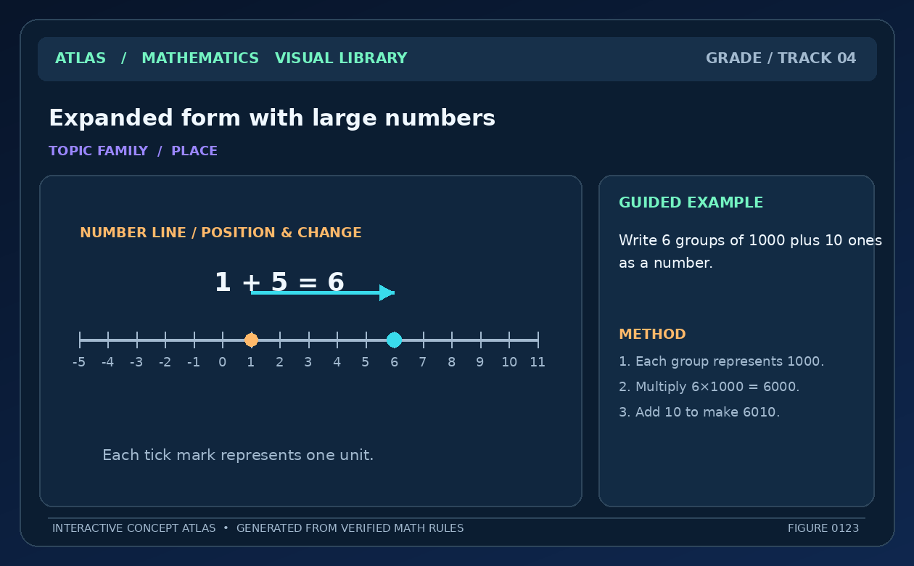
Write 6 groups of 1000 plus 10 ones as a number.
- Each group represents 1000.
- Multiply 6×1000 = 6000.
- Add 10 to make 6010.
Calculate 2×1000 + 6.
Hint: Expand the place value before adding.
Show answer and verify
2006
Check the units, inputs and intermediate steps. Different solution methods may be valid.
Rounding to powers of ten
Rounding to powers of ten: Group digits according to powers of ten; moving one place left multiplies value by 10. An expanded number is the sum of its place-value contributions.
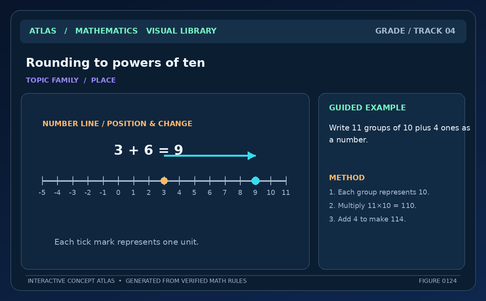
Write 11 groups of 10 plus 4 ones as a number.
- Each group represents 10.
- Multiply 11×10 = 110.
- Add 4 to make 114.
Calculate 3×10 + 11.
Hint: Expand the place value before adding.
Show answer and verify
41
Check the units, inputs and intermediate steps. Different solution methods may be valid.
Whole-number estimation
Whole-number estimation: Group digits according to powers of ten; moving one place left multiplies value by 10. An expanded number is the sum of its place-value contributions.
Write 6 groups of 100 plus 3 ones as a number.
- Each group represents 100.
- Multiply 6×100 = 600.
- Add 3 to make 603.
Calculate 2×100 + 6.
Hint: Expand the place value before adding.
Show answer and verify
206
Check the units, inputs and intermediate steps. Different solution methods may be valid.
Adding five-digit numbers
Adding five-digit numbers: Combine parts, using place value or number bonds to simplify the sum. Addition preserves a total when terms are rearranged.
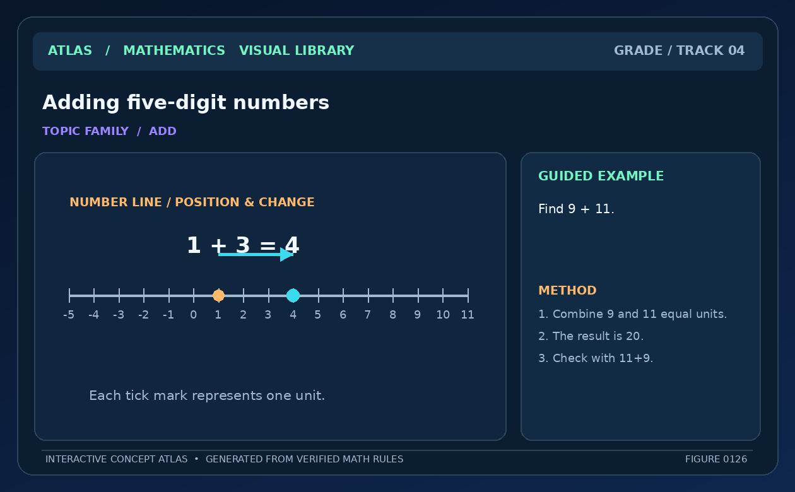
Find 9 + 11.
- Combine 9 and 11 equal units.
- The result is 20.
- Check with 11+9.
13 + 15 = ?
Hint: Make a ten or add the tens and ones separately.
Show answer and verify
28
Check the units, inputs and intermediate steps. Different solution methods may be valid.
Multi-step addition and subtraction
Multi-step addition and subtraction: Combine parts, using place value or number bonds to simplify the sum. Addition preserves a total when terms are rearranged.
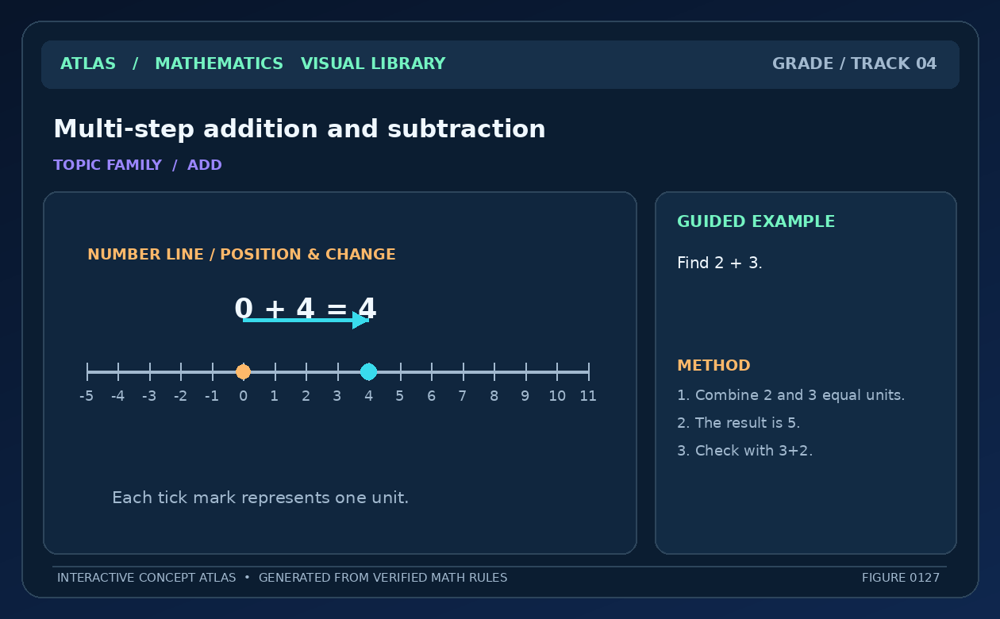
Find 2 + 3.
- Combine 2 and 3 equal units.
- The result is 5.
- Check with 3+2.
6 + 7 = ?
Hint: Make a ten or add the tens and ones separately.
Show answer and verify
13
Check the units, inputs and intermediate steps. Different solution methods may be valid.
Estimation of whole-number sums
Estimation of whole-number sums: Combine parts, using place value or number bonds to simplify the sum. Addition preserves a total when terms are rearranged.
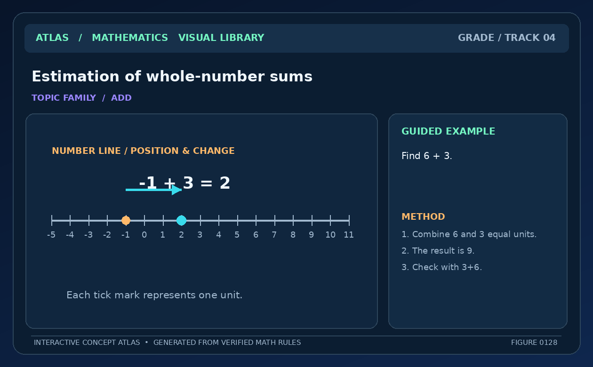
Find 6 + 3.
- Combine 6 and 3 equal units.
- The result is 9.
- Check with 3+6.
10 + 7 = ?
Hint: Make a ten or add the tens and ones separately.
Show answer and verify
17
Check the units, inputs and intermediate steps. Different solution methods may be valid.
Subtracting multi-digit numbers
Subtracting multi-digit numbers: Represent the difference between a starting amount and an amount removed. Subtraction can be checked by adding the difference to the subtracted amount.
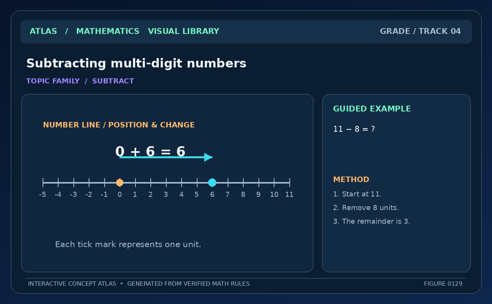
11 − 8 = ?
- Start at 11.
- Remove 8 units.
- The remainder is 3.
18 − 8 = ?
Hint: Subtract from the original amount.
Show answer and verify
10
Check the units, inputs and intermediate steps. Different solution methods may be valid.
Subtraction across multiple zeros
Subtraction across multiple zeros: Represent the difference between a starting amount and an amount removed. Subtraction can be checked by adding the difference to the subtracted amount.
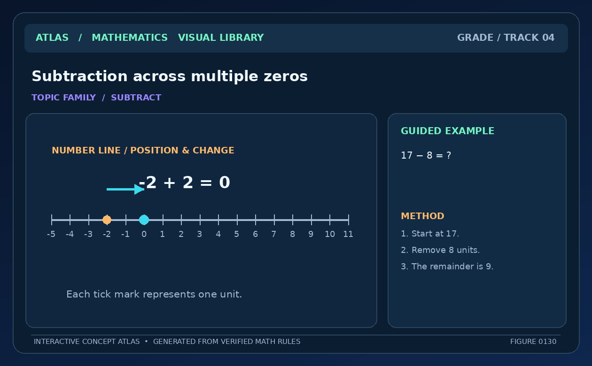
17 − 8 = ?
- Start at 17.
- Remove 8 units.
- The remainder is 9.
20 − 8 = ?
Hint: Subtract from the original amount.
Show answer and verify
12
Check the units, inputs and intermediate steps. Different solution methods may be valid.
Two-digit by two-digit multiplication
Two-digit by two-digit multiplication: Multiplication counts equal groups and can be visualized as rectangular arrays. Use the distributive property to break a product into smaller products.
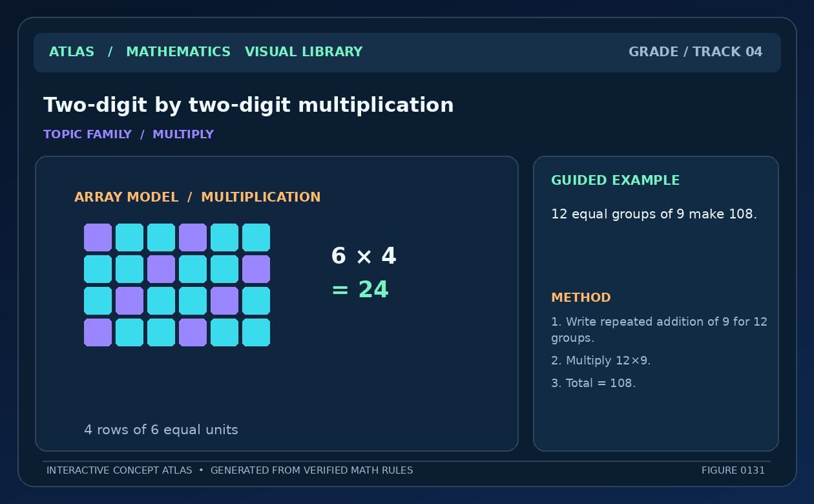
12 equal groups of 9 make 108.
- Write repeated addition of 9 for 12 groups.
- Multiply 12×9.
- Total = 108.
What is 18×9?
Hint: Use an area model or multiply each part.
Show answer and verify
162
Check the units, inputs and intermediate steps. Different solution methods may be valid.
Multiplication area model
Multiplication area model: Multiplication counts equal groups and can be visualized as rectangular arrays. Use the distributive property to break a product into smaller products.
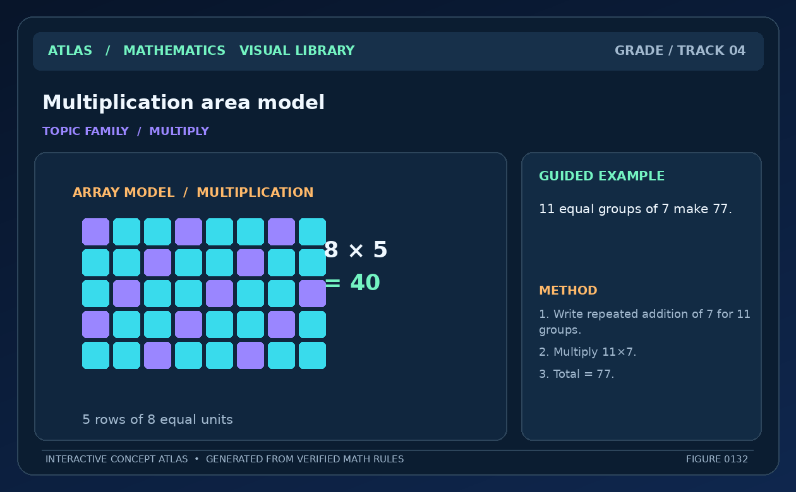
11 equal groups of 7 make 77.
- Write repeated addition of 7 for 11 groups.
- Multiply 11×7.
- Total = 77.
What is 13×7?
Hint: Use an area model or multiply each part.
Show answer and verify
91
Check the units, inputs and intermediate steps. Different solution methods may be valid.
Partial products multiplication
Partial products multiplication: Multiplication counts equal groups and can be visualized as rectangular arrays. Use the distributive property to break a product into smaller products.
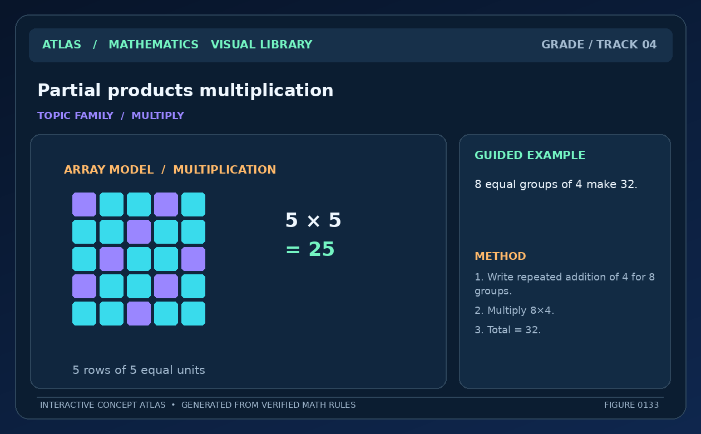
8 equal groups of 4 make 32.
- Write repeated addition of 4 for 8 groups.
- Multiply 8×4.
- Total = 32.
What is 10×4?
Hint: Use an area model or multiply each part.
Show answer and verify
40
Check the units, inputs and intermediate steps. Different solution methods may be valid.
Three-digit multiplication
Three-digit multiplication: Multiplication counts equal groups and can be visualized as rectangular arrays. Use the distributive property to break a product into smaller products.
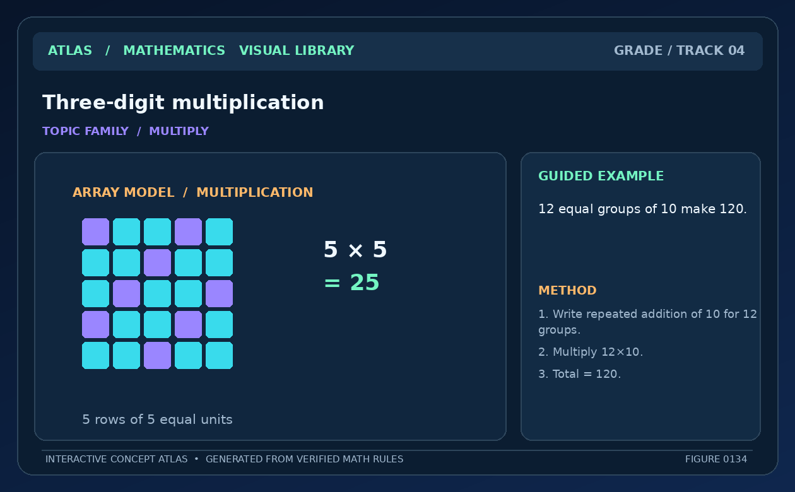
12 equal groups of 10 make 120.
- Write repeated addition of 10 for 12 groups.
- Multiply 12×10.
- Total = 120.
What is 13×10?
Hint: Use an area model or multiply each part.
Show answer and verify
130
Check the units, inputs and intermediate steps. Different solution methods may be valid.
Factors and factor pairs
Factors and factor pairs: Multiplication counts equal groups and can be visualized as rectangular arrays. Use the distributive property to break a product into smaller products.
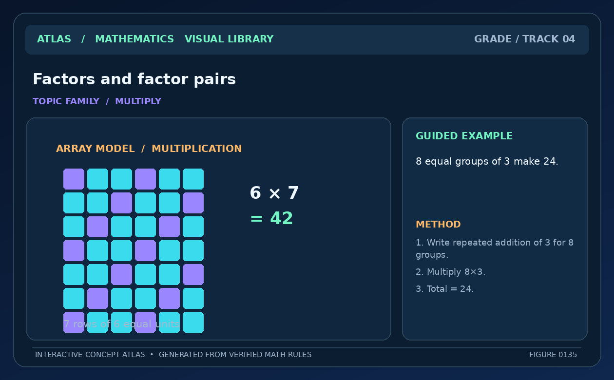
8 equal groups of 3 make 24.
- Write repeated addition of 3 for 8 groups.
- Multiply 8×3.
- Total = 24.
What is 13×3?
Hint: Use an area model or multiply each part.
Show answer and verify
39
Check the units, inputs and intermediate steps. Different solution methods may be valid.
Prime and composite numbers
Prime and composite numbers: Multiplication counts equal groups and can be visualized as rectangular arrays. Use the distributive property to break a product into smaller products.
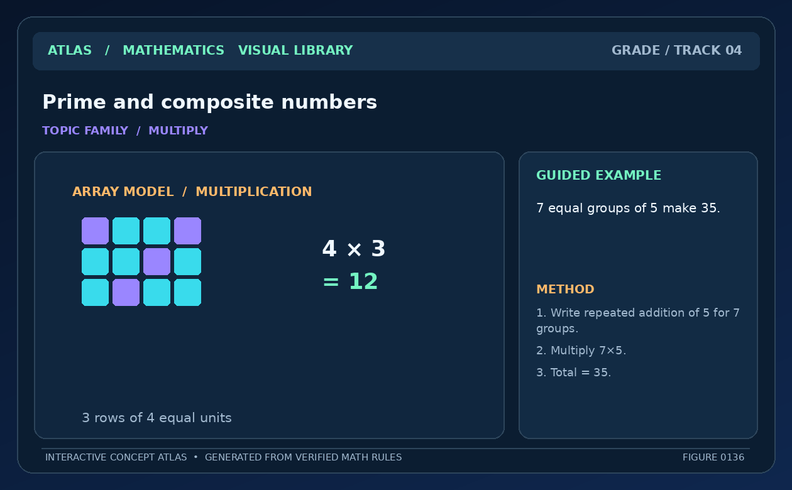
7 equal groups of 5 make 35.
- Write repeated addition of 5 for 7 groups.
- Multiply 7×5.
- Total = 35.
What is 10×5?
Hint: Use an area model or multiply each part.
Show answer and verify
50
Check the units, inputs and intermediate steps. Different solution methods may be valid.
Multiples and divisibility
Multiples and divisibility: Multiplication counts equal groups and can be visualized as rectangular arrays. Use the distributive property to break a product into smaller products.
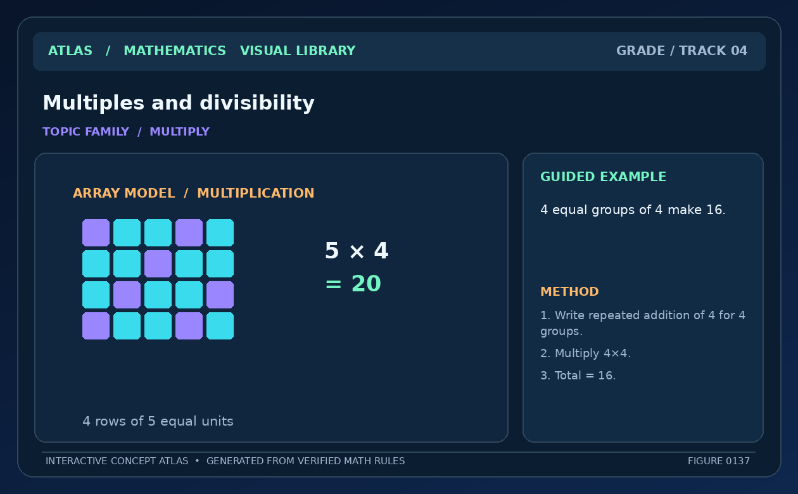
4 equal groups of 4 make 16.
- Write repeated addition of 4 for 4 groups.
- Multiply 4×4.
- Total = 16.
What is 6×4?
Hint: Use an area model or multiply each part.
Show answer and verify
24
Check the units, inputs and intermediate steps. Different solution methods may be valid.
Long division with remainders
Long division with remainders: Division finds how many equal groups can be made or the size of each group. Check your quotient by multiplying it by the divisor.
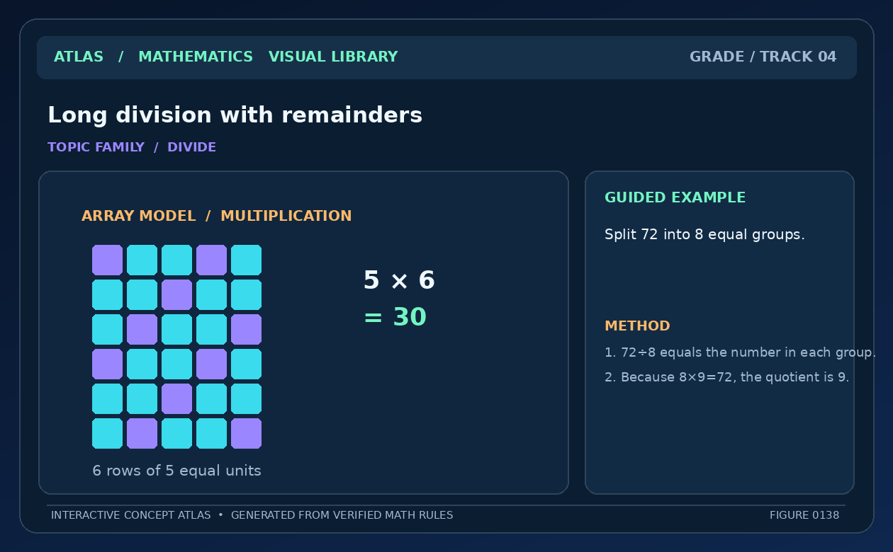
Split 72 into 8 equal groups.
- 72÷8 equals the number in each group.
- Because 8×9=72, the quotient is 9.
Compute 99 ÷ 9.
Hint: Use the inverse multiplication fact.
Show answer and verify
11
Check the units, inputs and intermediate steps. Different solution methods may be valid.
Quotient estimation
Quotient estimation: Division finds how many equal groups can be made or the size of each group. Check your quotient by multiplying it by the divisor.
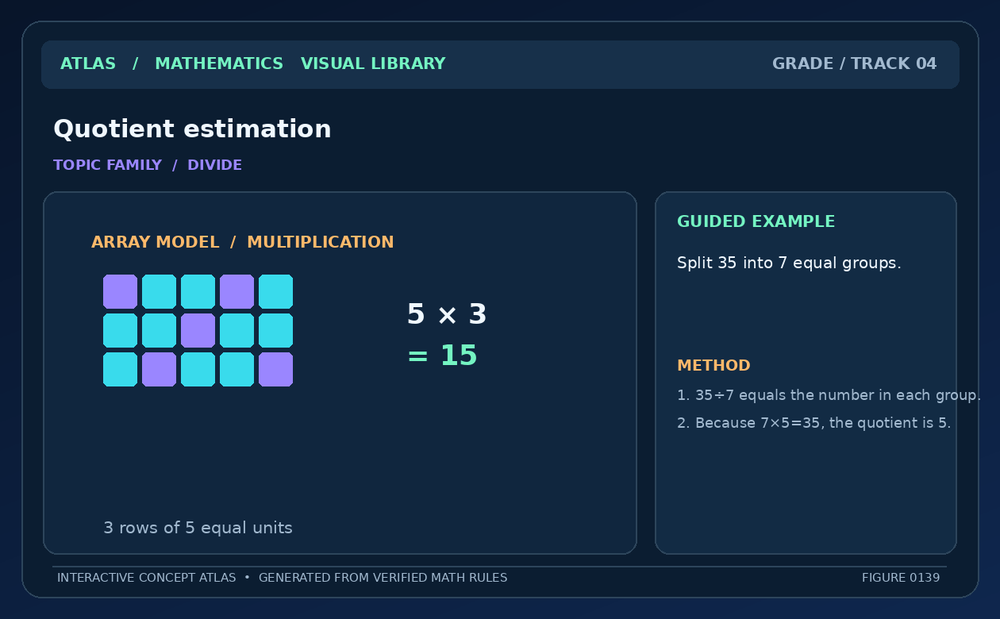
Split 35 into 7 equal groups.
- 35÷7 equals the number in each group.
- Because 7×5=35, the quotient is 5.
Compute 45 ÷ 5.
Hint: Use the inverse multiplication fact.
Show answer and verify
9
Check the units, inputs and intermediate steps. Different solution methods may be valid.
Division by two-digit divisors
Division by two-digit divisors: Division finds how many equal groups can be made or the size of each group. Check your quotient by multiplying it by the divisor.
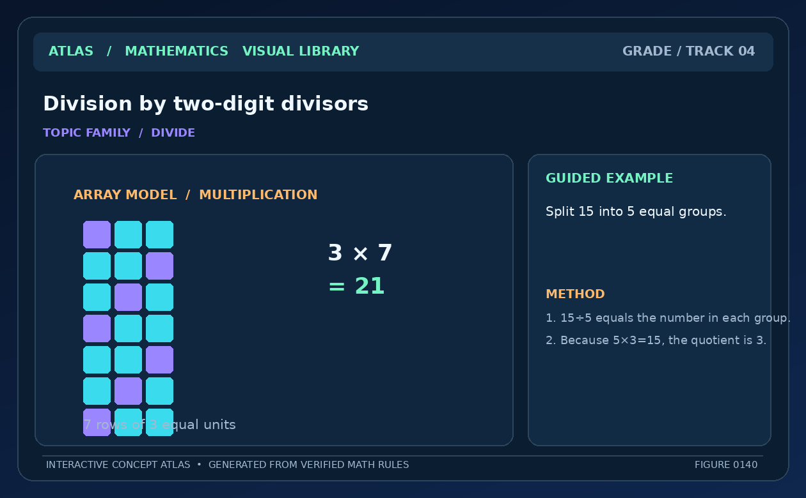
Split 15 into 5 equal groups.
- 15÷5 equals the number in each group.
- Because 5×3=15, the quotient is 3.
Compute 30 ÷ 3.
Hint: Use the inverse multiplication fact.
Show answer and verify
10
Check the units, inputs and intermediate steps. Different solution methods may be valid.
Interpreting remainders
Interpreting remainders: Division finds how many equal groups can be made or the size of each group. Check your quotient by multiplying it by the divisor.
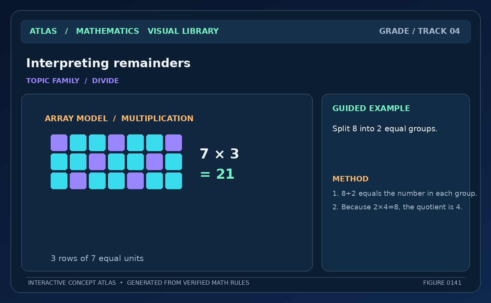
Split 8 into 2 equal groups.
- 8÷2 equals the number in each group.
- Because 2×4=8, the quotient is 4.
Compute 16 ÷ 4.
Hint: Use the inverse multiplication fact.
Show answer and verify
4
Check the units, inputs and intermediate steps. Different solution methods may be valid.
Equivalent fraction rules
Equivalent fraction rules: Use the numerator for selected parts and denominator for equal pieces in the whole. Equivalent fractions are obtained by multiplying numerator and denominator by the same nonzero factor.
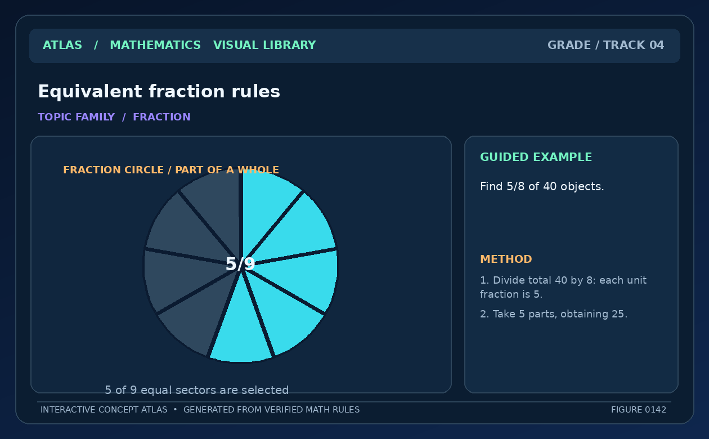
Find 5/8 of 40 objects.
- Divide total 40 by 8: each unit fraction is 5.
- Take 5 parts, obtaining 25.
Find 3/8 of 40 objects.
Hint: First find the value of one equal part.
Show answer and verify
15
Check the units, inputs and intermediate steps. Different solution methods may be valid.
Simplifying fractions
Simplifying fractions: Use the numerator for selected parts and denominator for equal pieces in the whole. Equivalent fractions are obtained by multiplying numerator and denominator by the same nonzero factor.
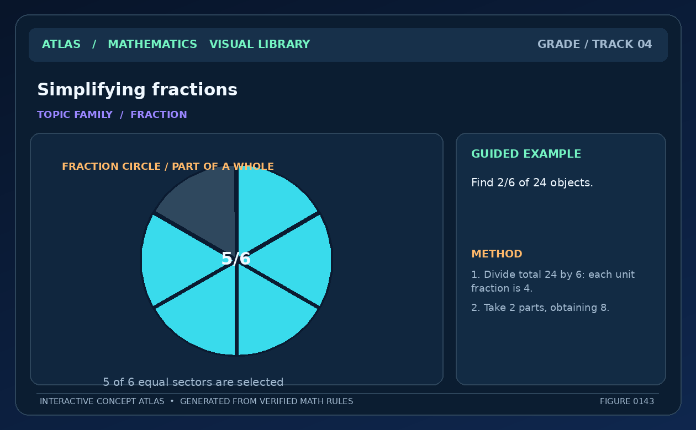
Find 2/6 of 24 objects.
- Divide total 24 by 6: each unit fraction is 4.
- Take 2 parts, obtaining 8.
Find 4/6 of 24 objects.
Hint: First find the value of one equal part.
Show answer and verify
16
Check the units, inputs and intermediate steps. Different solution methods may be valid.
Improper fractions
Improper fractions: Use the numerator for selected parts and denominator for equal pieces in the whole. Equivalent fractions are obtained by multiplying numerator and denominator by the same nonzero factor.
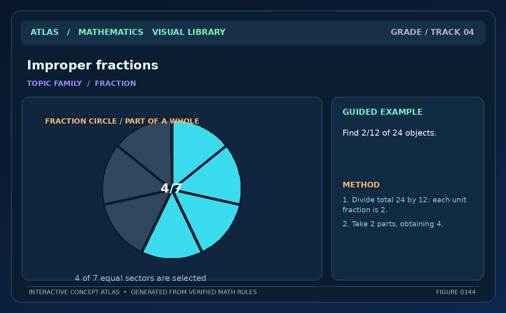
Find 2/12 of 24 objects.
- Divide total 24 by 12: each unit fraction is 2.
- Take 2 parts, obtaining 4.
Find 10/12 of 24 objects.
Hint: First find the value of one equal part.
Show answer and verify
20
Check the units, inputs and intermediate steps. Different solution methods may be valid.
Mixed numbers
Mixed numbers: Use the numerator for selected parts and denominator for equal pieces in the whole. Equivalent fractions are obtained by multiplying numerator and denominator by the same nonzero factor.
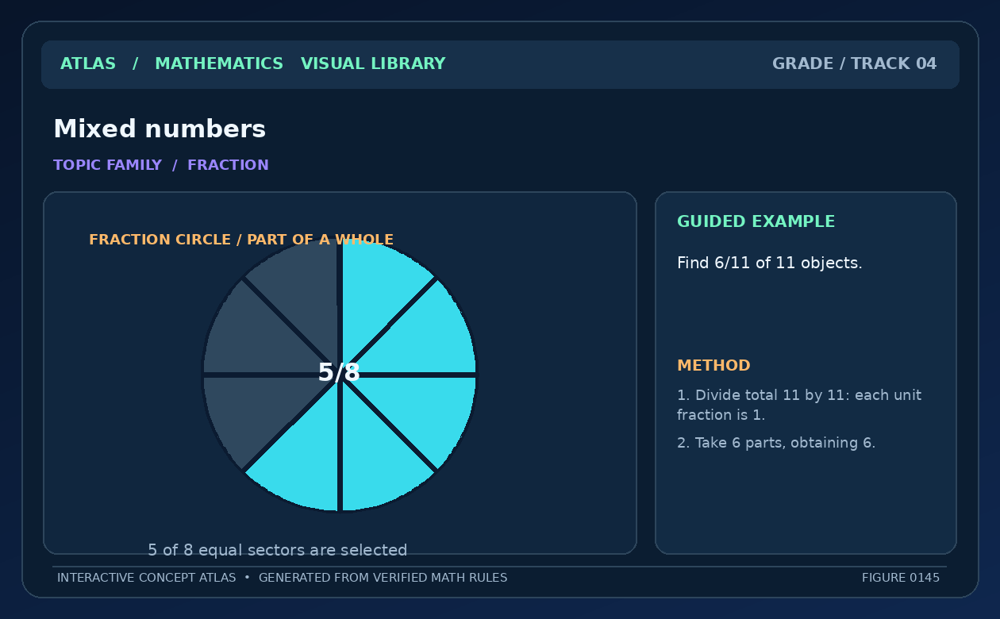
Find 6/11 of 11 objects.
- Divide total 11 by 11: each unit fraction is 1.
- Take 6 parts, obtaining 6.
Find 5/11 of 11 objects.
Hint: First find the value of one equal part.
Show answer and verify
5
Check the units, inputs and intermediate steps. Different solution methods may be valid.
Fraction addition using models
Fraction addition using models: Use the numerator for selected parts and denominator for equal pieces in the whole. Equivalent fractions are obtained by multiplying numerator and denominator by the same nonzero factor.
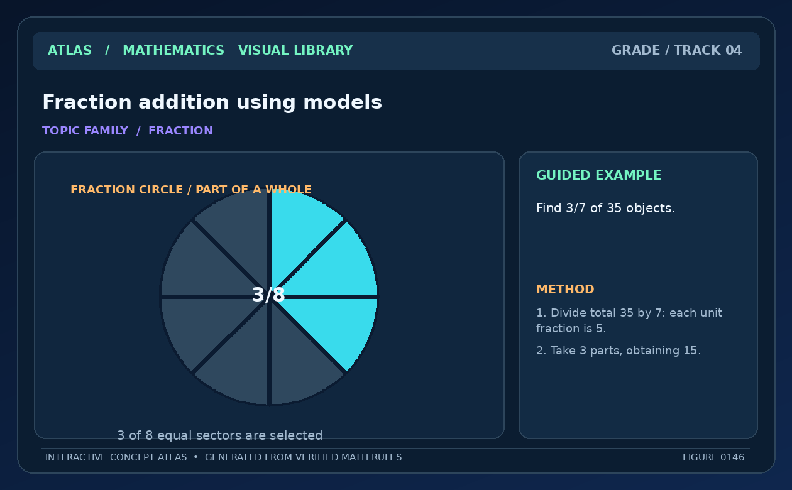
Find 3/7 of 35 objects.
- Divide total 35 by 7: each unit fraction is 5.
- Take 3 parts, obtaining 15.
Find 4/7 of 35 objects.
Hint: First find the value of one equal part.
Show answer and verify
20
Check the units, inputs and intermediate steps. Different solution methods may be valid.
Fraction subtraction with like denominators
Fraction subtraction with like denominators: Use the numerator for selected parts and denominator for equal pieces in the whole. Equivalent fractions are obtained by multiplying numerator and denominator by the same nonzero factor.
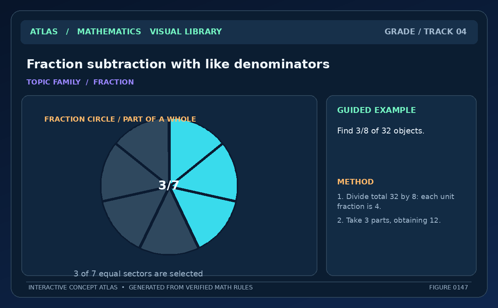
Find 3/8 of 32 objects.
- Divide total 32 by 8: each unit fraction is 4.
- Take 3 parts, obtaining 12.
Find 5/8 of 32 objects.
Hint: First find the value of one equal part.
Show answer and verify
20
Check the units, inputs and intermediate steps. Different solution methods may be valid.
Comparing fractions on a number line
Comparing fractions on a number line: Use the numerator for selected parts and denominator for equal pieces in the whole. Equivalent fractions are obtained by multiplying numerator and denominator by the same nonzero factor.
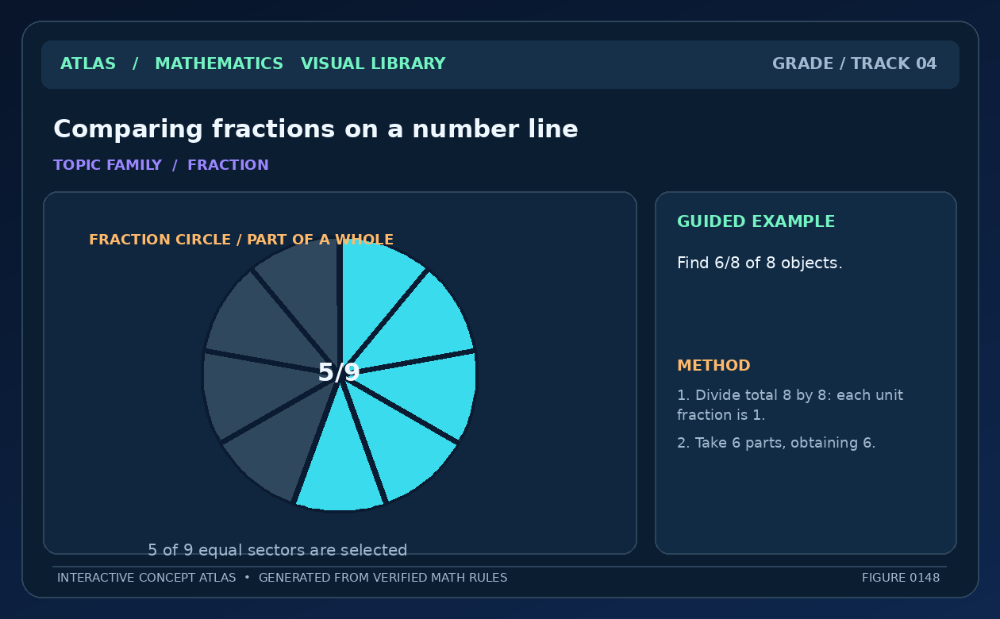
Find 6/8 of 8 objects.
- Divide total 8 by 8: each unit fraction is 1.
- Take 6 parts, obtaining 6.
Find 2/8 of 8 objects.
Hint: First find the value of one equal part.
Show answer and verify
2
Check the units, inputs and intermediate steps. Different solution methods may be valid.
Decimal tenths and hundredths
Decimal tenths and hundredths: Write decimals in aligned place-value columns and track every decimal digit. Ten hundredths make one tenth and ten tenths make one whole.
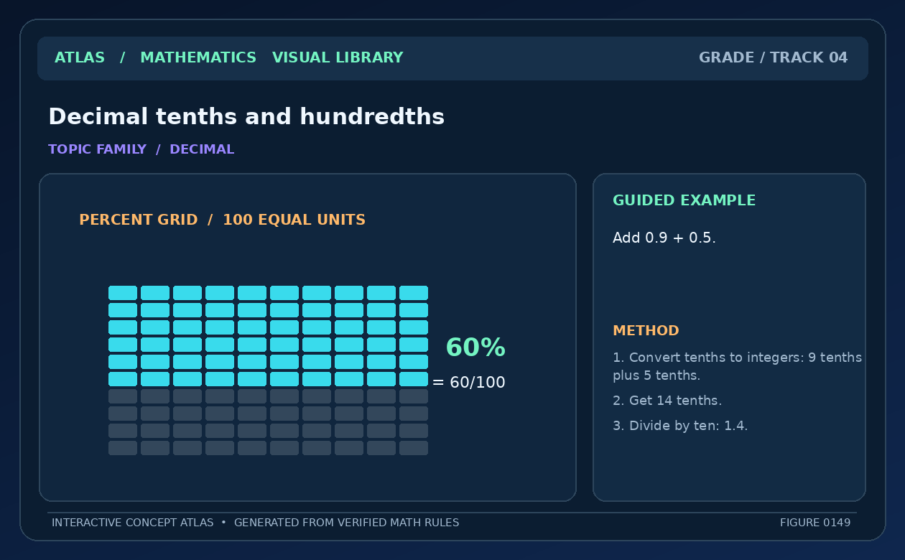
Add 0.9 + 0.5.
- Convert tenths to integers: 9 tenths plus 5 tenths.
- Get 14 tenths.
- Divide by ten: 1.4.
1.6 + 1.2 = ?
Hint: Align the decimal points.
Show answer and verify
2.8
Check the units, inputs and intermediate steps. Different solution methods may be valid.
Decimal place value chart
Decimal place value chart: Write decimals in aligned place-value columns and track every decimal digit. Ten hundredths make one tenth and ten tenths make one whole.
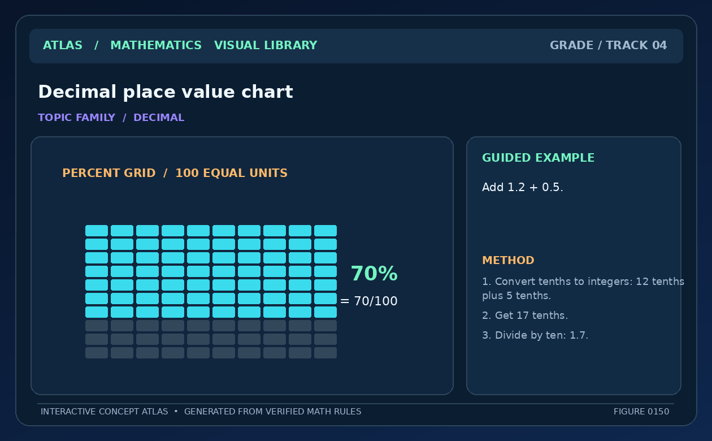
Add 1.2 + 0.5.
- Convert tenths to integers: 12 tenths plus 5 tenths.
- Get 17 tenths.
- Divide by ten: 1.7.
1.9 + 1.2 = ?
Hint: Align the decimal points.
Show answer and verify
3.1
Check the units, inputs and intermediate steps. Different solution methods may be valid.
Decimal comparisons
Decimal comparisons: Write decimals in aligned place-value columns and track every decimal digit. Ten hundredths make one tenth and ten tenths make one whole.
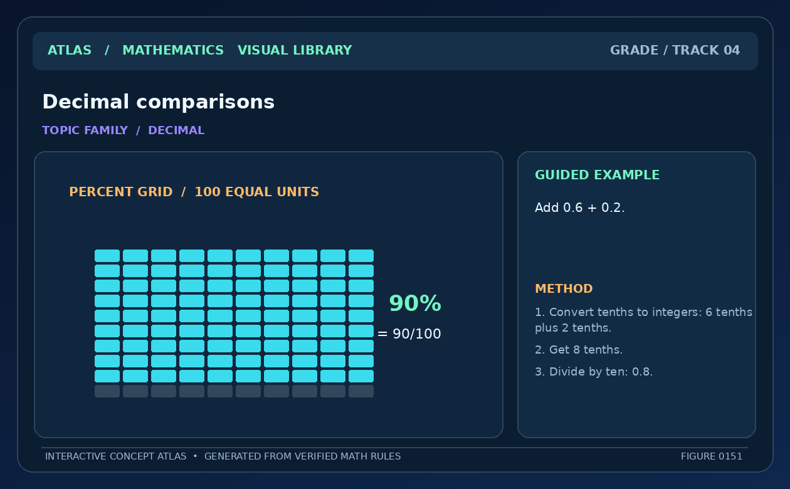
Add 0.6 + 0.2.
- Convert tenths to integers: 6 tenths plus 2 tenths.
- Get 8 tenths.
- Divide by ten: 0.8.
1.1 + 0.7 = ?
Hint: Align the decimal points.
Show answer and verify
1.8
Check the units, inputs and intermediate steps. Different solution methods may be valid.
Decimal addition introduction
Decimal addition introduction: Write decimals in aligned place-value columns and track every decimal digit. Ten hundredths make one tenth and ten tenths make one whole.
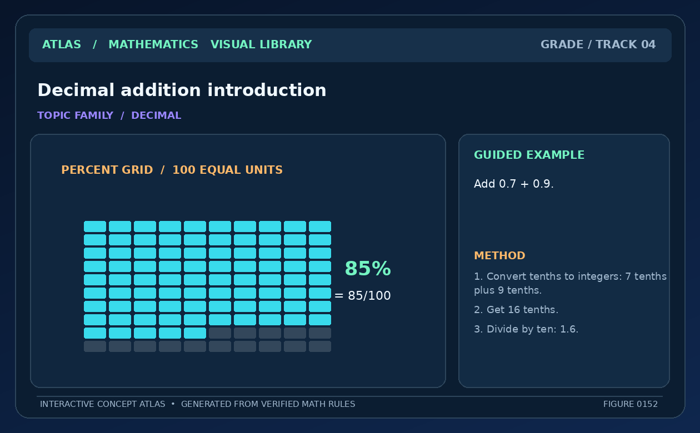
Add 0.7 + 0.9.
- Convert tenths to integers: 7 tenths plus 9 tenths.
- Get 16 tenths.
- Divide by ten: 1.6.
1.1 + 1.3 = ?
Hint: Align the decimal points.
Show answer and verify
2.4
Check the units, inputs and intermediate steps. Different solution methods may be valid.
Angle measurement with a protractor
Angle measurement with a protractor: Sketch and label known lengths, angles and shape properties before calculating. A valid geometric argument uses definitions and established properties.
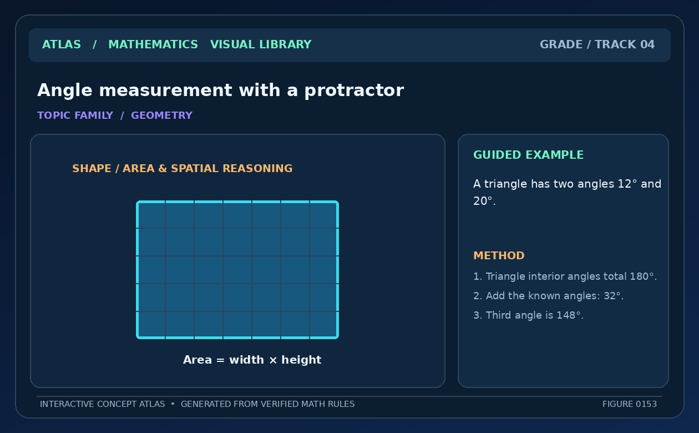
A triangle has two angles 12° and 20°.
- Triangle interior angles total 180°.
- Add the known angles: 32°.
- Third angle is 148°.
A triangle has angles 8° and 15°. Find the third.
Hint: Interior triangle angles sum to 180 degrees.
Show answer and verify
157
Check the units, inputs and intermediate steps. Different solution methods may be valid.
Acute right and obtuse angles
Acute right and obtuse angles: Sketch and label known lengths, angles and shape properties before calculating. A valid geometric argument uses definitions and established properties.
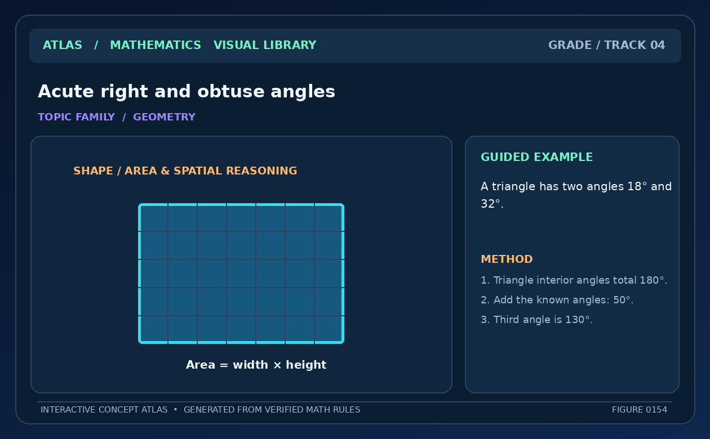
A triangle has two angles 18° and 32°.
- Triangle interior angles total 180°.
- Add the known angles: 50°.
- Third angle is 130°.
A triangle has angles 12° and 24°. Find the third.
Hint: Interior triangle angles sum to 180 degrees.
Show answer and verify
144
Check the units, inputs and intermediate steps. Different solution methods may be valid.
Adjacent and supplementary angles
Adjacent and supplementary angles: Sketch and label known lengths, angles and shape properties before calculating. A valid geometric argument uses definitions and established properties.
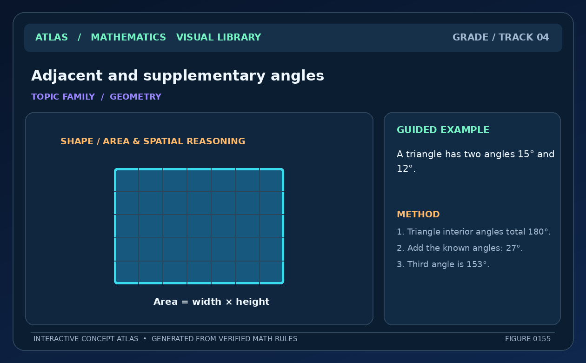
A triangle has two angles 15° and 12°.
- Triangle interior angles total 180°.
- Add the known angles: 27°.
- Third angle is 153°.
A triangle has angles 10° and 9°. Find the third.
Hint: Interior triangle angles sum to 180 degrees.
Show answer and verify
161
Check the units, inputs and intermediate steps. Different solution methods may be valid.
Parallel line diagrams
Parallel line diagrams: Sketch and label known lengths, angles and shape properties before calculating. A valid geometric argument uses definitions and established properties.
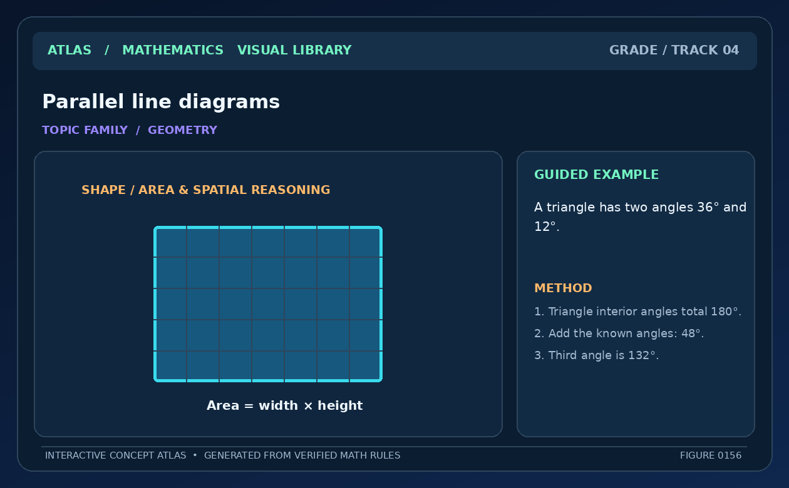
A triangle has two angles 36° and 12°.
- Triangle interior angles total 180°.
- Add the known angles: 48°.
- Third angle is 132°.
A triangle has angles 24° and 9°. Find the third.
Hint: Interior triangle angles sum to 180 degrees.
Show answer and verify
147
Check the units, inputs and intermediate steps. Different solution methods may be valid.
Reflection symmetry
Reflection symmetry: Sketch and label known lengths, angles and shape properties before calculating. A valid geometric argument uses definitions and established properties.
A triangle has two angles 15° and 40°.
- Triangle interior angles total 180°.
- Add the known angles: 55°.
- Third angle is 125°.
A triangle has angles 10° and 30°. Find the third.
Hint: Interior triangle angles sum to 180 degrees.
Show answer and verify
140
Check the units, inputs and intermediate steps. Different solution methods may be valid.
Rotational symmetry
Rotational symmetry: Sketch and label known lengths, angles and shape properties before calculating. A valid geometric argument uses definitions and established properties.
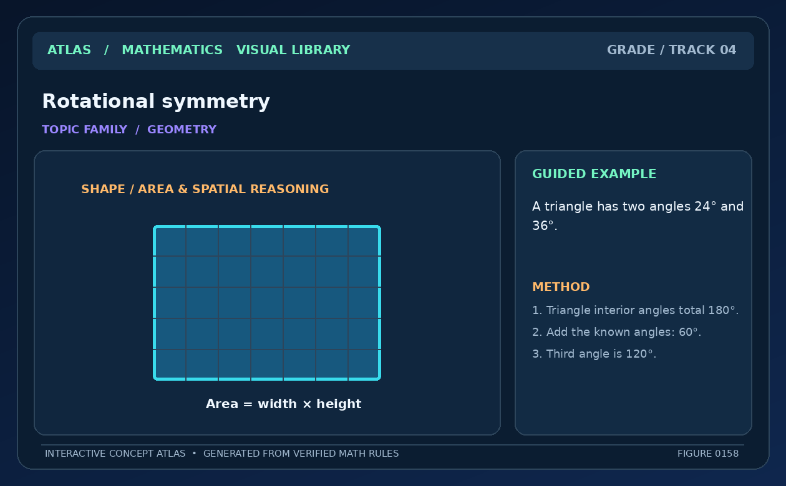
A triangle has two angles 24° and 36°.
- Triangle interior angles total 180°.
- Add the known angles: 60°.
- Third angle is 120°.
A triangle has angles 16° and 27°. Find the third.
Hint: Interior triangle angles sum to 180 degrees.
Show answer and verify
137
Check the units, inputs and intermediate steps. Different solution methods may be valid.
Converting meters and centimeters
Converting meters and centimeters: Convert by applying a consistent unit factor; write units in every step. An equivalent measurement has a different number but represents the same magnitude.
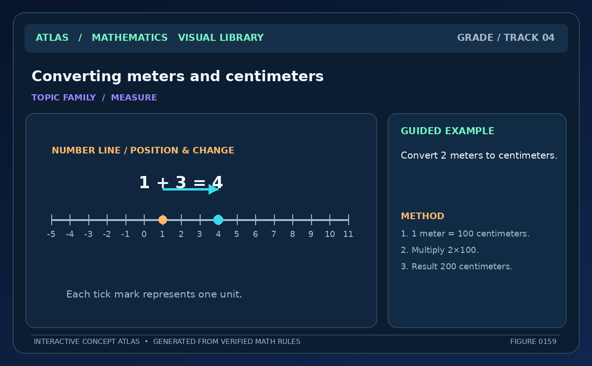
Convert 2 meters to centimeters.
- 1 meter = 100 centimeters.
- Multiply 2×100.
- Result 200 centimeters.
5 meters equals how many centimeters?
Hint: Multiply meters by 100.
Show answer and verify
500
Check the units, inputs and intermediate steps. Different solution methods may be valid.
Customary units of length
Customary units of length: Convert by applying a consistent unit factor; write units in every step. An equivalent measurement has a different number but represents the same magnitude.
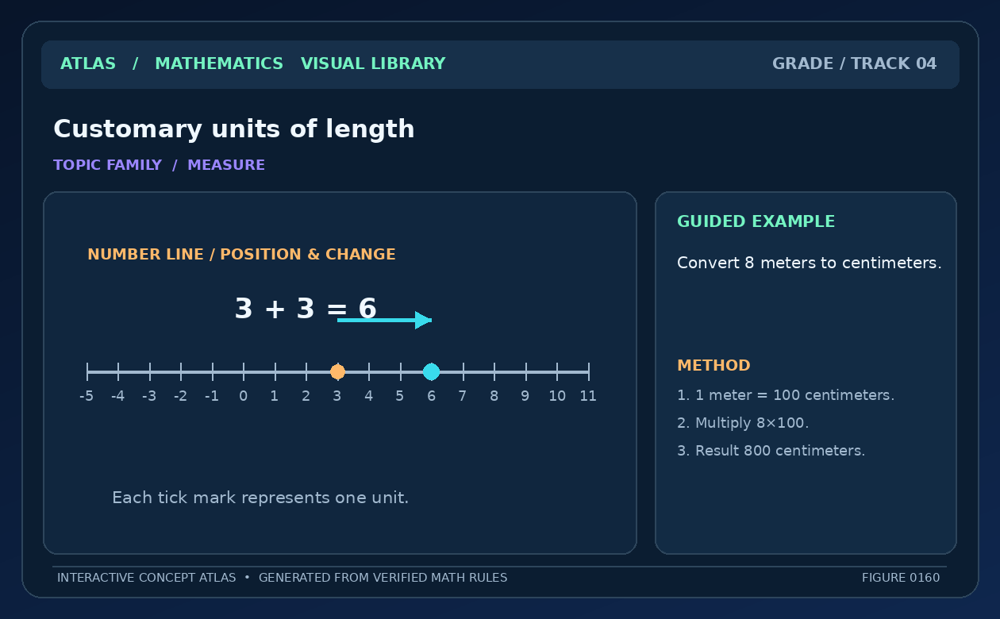
Convert 8 meters to centimeters.
- 1 meter = 100 centimeters.
- Multiply 8×100.
- Result 800 centimeters.
5 meters equals how many centimeters?
Hint: Multiply meters by 100.
Show answer and verify
500
Check the units, inputs and intermediate steps. Different solution methods may be valid.
Converting minutes to hours
Converting minutes to hours: Convert by applying a consistent unit factor; write units in every step. An equivalent measurement has a different number but represents the same magnitude.
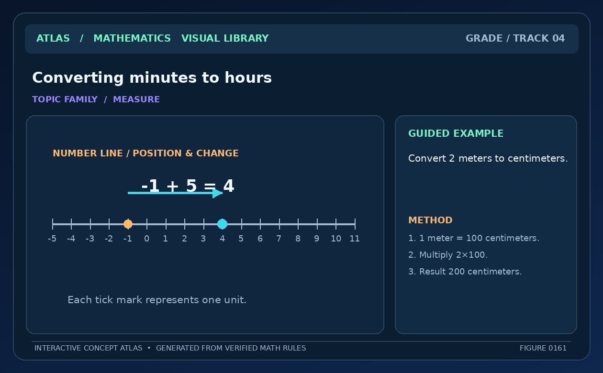
Convert 2 meters to centimeters.
- 1 meter = 100 centimeters.
- Multiply 2×100.
- Result 200 centimeters.
6 meters equals how many centimeters?
Hint: Multiply meters by 100.
Show answer and verify
600
Check the units, inputs and intermediate steps. Different solution methods may be valid.
Line plots with fractions
Line plots with fractions: Organize observations and distinguish measures of center from measures of spread. The mean is the total divided by the number of observations.
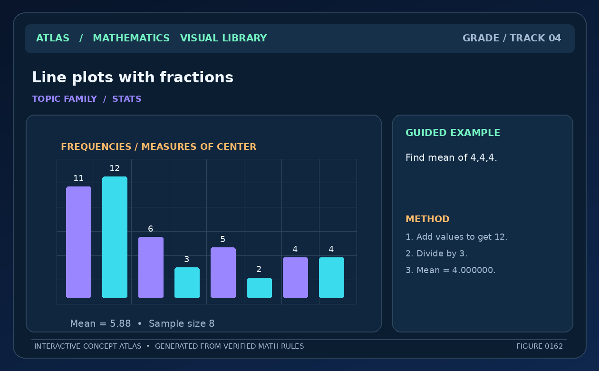
Find mean of 4,4,4.
- Add values to get 12.
- Divide by 3.
- Mean = 4.000000.
Mean of 4,6,8?
Hint: Sum observations and divide by count.
Show answer and verify
6
Check the units, inputs and intermediate steps. Different solution methods may be valid.
Reading multiseries charts
Reading multiseries charts: Organize observations and distinguish measures of center from measures of spread. The mean is the total divided by the number of observations.
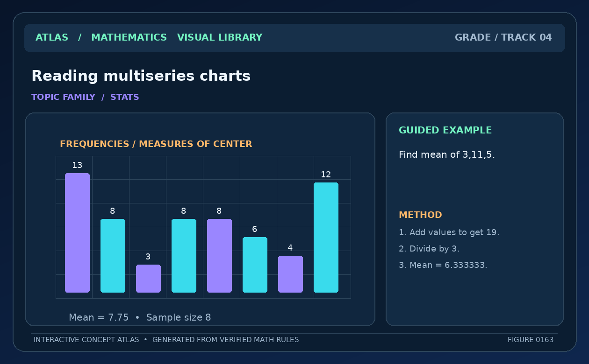
Find mean of 3,11,5.
- Add values to get 19.
- Divide by 3.
- Mean = 6.333333.
Mean of 3,5,7?
Hint: Sum observations and divide by count.
Show answer and verify
5
Check the units, inputs and intermediate steps. Different solution methods may be valid.